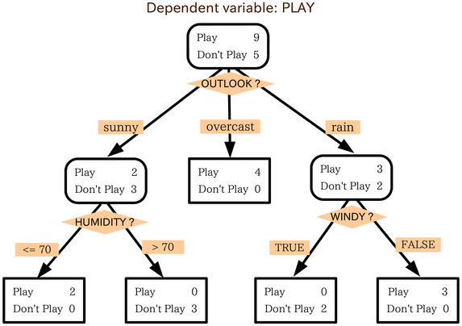

public: true class: center, middle # Presentation for HKUST Project Presentor: Enmeng Liu ### Group Members + Yi Xie + Enmeng Liu + Bingkun Huang + Wei He 2019/2/20 @ HKUST --- # Task Understanding + Predict the **running time** of SGDclassifier + With parameters assigned different values --- # How? -- + Black box: Regression -- + Theory of SGDclassifier -- --- ## SGDclassifier + An iterative method for optimizing a differentiable objective function(可微分目标函数的一种迭代优化方法) + A stochastic approximation of gradient descent optimization(梯度下降优化的一种随机逼近方法) + To find the minimum of the cost function --- class: center, middle # Data Preprocessing ## Filter parameters(RTFM) --- ## Model-related Parameters .right-column[ - .green[`penalty`:choice of penalty function] - .green[`l1 _ratio`:the proportion of l1 and l2 in ElasticNet penalty] - `alpha`: Constant of the regularization term - `max_iter`: the max number of times of iteration - <s>`random_state`: the seed of random number</s> - .green{n_jobs`: number of CPU used} ] --- # Modifications + `penalty` and `l1_ratio` |penalty|l1_ratio|l2_ratio| |:-:|:-:|:-:| |None|0|0| |l1|1|0| |l2|0|1| |ElasticNet|l1_ratio|1-l1_ratio| + `random_state`: change -1 to 16 --- # Data Preprocessing ## Data-related Parameters .right-column[ + `n_samples` + `n_features` + `n_classes` + `n_clusters` + `n_informative` + `flip_y`: the number of y's flipped + <s>`scale`: A value to multiply the features</s> ] --- # Choose Model ### Frequently-used Regression Models + Linear Regression + k-NearestNeighbours + Support Vector Machine + Decision Tree + ... --- # Choose Model ### Frequently-used Regression Models + Linear Regression + k-NearestNeighbours + Support Vector Machine + .red[Decision Tree] + ... --- # Decision Tree  --- # Polish up + CART alg: for regrssion + leaf node: .green[value → linear model] -- + model tree --- class: center, middle # Code Demo --- ```python # Choose model model = linear_regr() # Build model tree model_tree = ModelTree(model, max_depth=5, min_samples_leaf=3, search_type="greedy", n_search_grid=100) ``` ***** ### Parameters Adjustment + tree genarate + `max_depth`:4-5 + `min_samples_leaf`: 10↑↓ + `search_type`: greedy/grid/adaptive + linear model + not big impact --- # Result <img src = "static/image/final70.png" width = 700> + Generalization --- # Gain + Basic theories of ML + Ways to adjust parameters + Experience of <s>Gambling</s> Competing --- class: middle, center # THANK YOU!